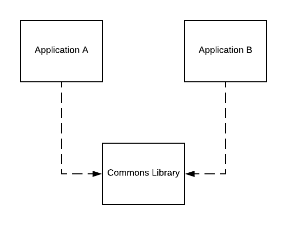
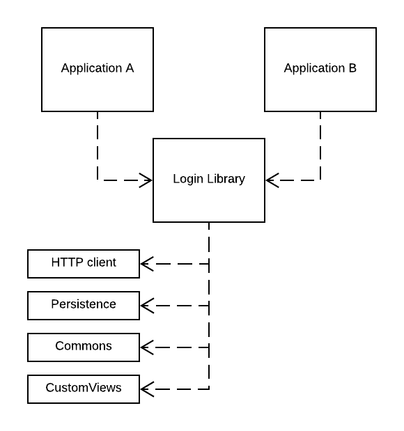

It seems great
Write code once use it many times. Creating smaller pieces of code forces developers to write encapsulated software that follows single responsibility principle and is easy to test. Such code piece (AKA module) can be then published as a versioned artifact - a private library, that can be reused in more than one project. We are getting quality and reusability, how cool is that! Well that’s the theory. I’d like to share fictional story (that could be real) when modularization went wrong and some ideas how to avoid that.
But why?
So some say it’s good to create libraries, but why exactly?
If you are (like me) an Android developer it’s highly probable you’ve handled input fields, like email, password, IP address etc. Handling such fields usually means creating some helper class to verify if typed text is in correct form. Yes, there are libs for that, but checking input fields may be very usecase specific - I remember checking if typed IP address is available in local network or outside of it. For me it was faster to create and unit test my own solution than look for library providing such validator. After a while there were few helpers like that, and new project appeared were they could be used. So what now, copy and paste code from one project to another? Hell no. I’ve created library for internal usage that I’ve shared between both projects.

Story time
Disclaimer: This is pure fictional story, based on my own experience and other developer stories I’ve heard, oversimplified and overcolorized
Now imagine complex user flow shared between projects, like login or registration to cloud service. Basically it’s few screens with inputs, some HTTP requests, maybe data persistence. On the end you want to know if user is properly logged in and get auth data for future HTTP requests. If the flow itself is not that straightforward, has some weird branches only business seems to understand, it appears really worthy to write it once and use in upcoming project that will share this functionality.

Here fun begins
But what to put into this login module? It needs to talk with cloud, so maybe HTTP client should be added. User email should be saved so some simple key-value persistence will come handy. Layouts, fragments, presenters and whole navigation - after all we just need to get logged user data from this module. Library is using other shared modules like Commons Library from first example, also some custom views like input fields with fancy error showing. Library API was made in fancy at the time RxJava 1. Everything versioned and kept on internal artifact server (like JFrog Artifactory), ready to use in future projects. Business assured that nothing will change in user login flow so developers were sure they are making good decision cuppling it all together.
More fun
The second project is launched some time after development of Login Library was finished and it has been released with first project. New project is also developed by other team than first. There is the same requirement of logging to cloud service in new project, so developers decided to use Login Library from first project. But how to use it if there is no README or example in library repository? Just check the first project… Second project business requirement was to have all persisted data encoded but Login Library was using internaly simple key-value storage without any encoding possibilities. It can be easly fixed since it’s internal project.
Second project team updated Login Library so it can go along with various business requirements (for faster development they’ve used local Maven library), and created pull request with changes, original authors of library were added as rewievers. But the reviewers were busy with their own project so it took them a week to check the PR, it got accepted, new version of library was released and used in second project.
Then business has great idea to change look of login screens in second app to be more up to date. Developers added injecting styles to library, but they broke backwards compatibility during the process. Another change in Login Library, another pull request, another week.
Meanwhile developers of first project have found a bug in Login Library, they created fix and wanted to release it fast… but now they need to change their application because of changes made by second team, or fork it and begin linux-distro-like hell.
And now business has another great idea to change flow for second project only…
Please stahp
You see where I’m going with it? And list of potential problems can be easily extended: second project uses RxJava2, HTTP client headers may be different for each project, analytics of login flow should be separate for each project, diferent ideas how to maintain library, etc.
At the end creating such shared module didn’t solve any problems, but generated new ones. It didn’t speed up development but made it slower and annoying, possibly creating useless tension between teams and people.
Too much love will kill you
Somehow this song fits to above story: great idea of sharing code, so much passion in developing library module that would solve so many problems, team cooperation… so much love. But yet it sucks. But it doesn’t have to, here is how:
- Never believe when business tells you “we won’t be changing that”
- Each shared module should have an owner, person who knows why and how it works and decides about direction of module development. And I mean 1 person, not team - any project will die with big enough decision committee. Shared ownership means shared responsibility - will work as great as communism.
- Creating shared library is no different from adding new internal service or class and the same rules apply.
- reduce outside dependencies
- consciously design your API
- think about various configuration variants rather than current use cases
- shared code is to be used by application so don’t force clients of your lib to change application architecture just to use it
- SOLID, DRY bla bla bla…
- Think few times do you really need to create shared library, talk with other teams what they think about it. Something that seems a great idea at first may be overkill or not be used at all on the end. Sometimes well designed module or even package in monolith app is good enough, and can be moved to library when the need comes.
- Create README, and make it a good one. Examples, explanations, generated documentation. You will thank me later.
- Create example application that uses your shared code, so going through old projects won’t be necessary to understand it.
- Always add tests (unit, functional) in your library
- CI/CD will make your life easer
So for my example with Login Library:
- Putting views and whole navigation is asking for problems: UI will change for different reasons than business logic and each change has to be released as new version of library and updated dependency in app, it may also limit navigation control and changing user flows.
- Putting HTTP client and persistence directly into library is easy, but also may cause problems. Such dependencies should be injected by application that uses library.
- External dependency used for library public API is risky, it’s probably better idea to keep it bare bones and then add
reactive extensions. - Select owner - faster pull requests and better overall library maintenance.
- Add README, code examples, documentation.
Final thought
It’s good to learn from yor own mistakes, but engineers should mostly learn from mistakes made by others. If you rush into creating libraries without learning a lesson from other developers errors - you will surely recreate some of them. And those errors cost a lot of time, frustration and useless work.
If you are working with a lot of short term projects, you’ll probably need only something like commons library or not even that. For bigger/longer projects creating library should be conscious decision made by mature developers creating balanced teams. Each internal library requires time for setup and maintenance, and even more if you decide to publish it as open source.
There are other ways to share code between projects, like monorepo or git subtree, but they cause other problems. As they say in IBM - THINK and select best solution for your case.